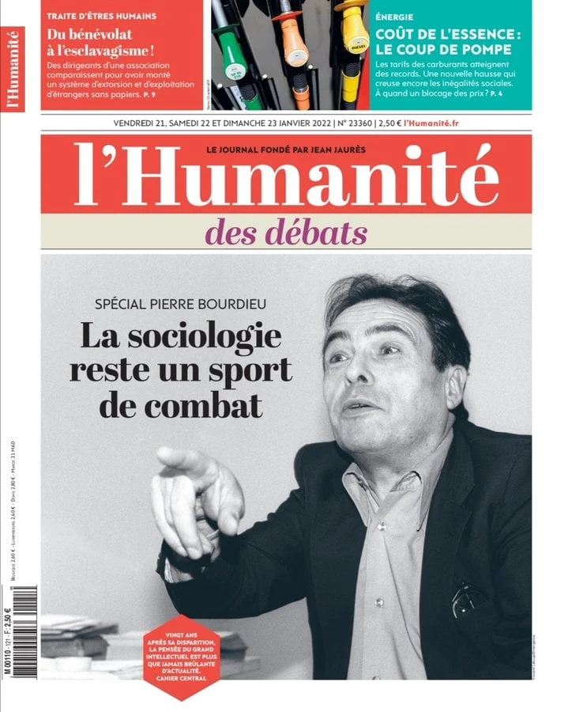

Publication d’archives
Pierre Bourdieu, le sens commun.
Date indiquée par Facebook · 21 janvier 2022
Texte conservé avec la publication
Contexte du dossier
L’entretien de Brian Bouillon-Baker avec Cyprien Caddeo, relayé le 1er décembre à l’occasion de la panthéonisation de Joséphine Baker, décrit une artiste, résistante et militante antiraciste. Son fils rapporte à la fois sa fidélité à de Gaulle, son attrait pour les valeurs de partage et ses critiques du totalitarisme. Ce témoignage résiste aux étiquettes sommaires. Le 21 janvier 2022, l’annonce d’un dossier de L’Humanité consacré à Pierre Bourdieu rappelle une autre articulation : rigueur scientifique et engagement dans les mouvements sociaux. Connaître une œuvre et une vie demande mieux qu’une figure consensuelle privée de ses combats.

Sources
Archive rouge · export Facebook · AR-0002-FB-01983
À lire aussi · Marcel Paul, au-delà d’un nom de parking